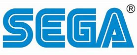

Durante bastante tiempo ha sido complicado señalar cual fue el primer videojuego, principalmente debido a las múltiples definiciones de este que se han ido estableciendo, pero se puede considerar como primer videojuego el Nought and crosses, también llamado OXO, desarrollado por Alexander S.Douglas en 1952. El juego era una versión computerizada del tres en raya que se ejecutaba sobre la EDSAC.
En 1961 llega el Spacewar! creado por Russell en la computadora PDP-1. Este juego que consiste en dos naves que se enfrentan en el espacio exterior. Es considerado como el primer juego de ordenador de la historia.
En los años 70, Ralph Baer junto a un equipo, habían conseguido hacer funcionar (en 1967) un juego de ping pong para dos jugadores. Tuvieron problema para comerciar el juego, hasta que encontaron a Magnavox
En 1972 se lanza la Magnavox Odyssey al mercado, con 12 juegos distintos.
Por otra parte encontramos con Bushnell y Ted Dabney que juntan fondos para crear una empresa. El nombre de esta empresa sería Atari. Cuando Bushnell asiste a la Magnavox Profit Caravan de ese mismo año y ve la Magnavox Odyssey, tiene la idea de crear un juego similar. Tres meses más tarde ya tiene un prototipo operativo. Lo bautizan como Pong. Pong sería el mayor éxito jamás visto en la industria de los videojuegos hasta ese momento.
A partir del éxito de Pong, Atari comienza a crecer de una manera espectacular. Esto llevó a Atari a sacar nuevos juegos en el mercado como Space Race, Pong Doubles y Gotcha.
Años más tarde, en 1974, llegaría el Home Pong, máquina que permitía jugar al Pong en los televisores de las casas.
En 1976 llega la Telstar de Coleco teniendo un éxito total en ventas, pero Atari contraatacaría con el Breakout de Steve Jobs. Acabó siendo el mejor juego del año y el primer clon de Pong que conseguía ser más adictivo que el original. Éste mismo año llega la Channel F de Fairchild, máquina que utilizaba cartuchos para almacenar sus juegos
Atari lanza en 1977 la VCS 2600 con nueve juegos. El negocio a partir de ahora se orientaría a vender software en lugar de hardware. Y de mientras Nintendo lanzaba su primera consola en Japón: La Color TV Game 6.
En 1978 llegaría el mítico Space Invaders de Taito. Fue un éxito absoluto, llegando a provocar que el gobierno japones cuadriplicara la producción de monedas yen, por su escasez a causa del juego.
Un año más tarde, Atari presenta el Asteroids, siendo un superventas, destronando al Space Invaders. Otro gran juego que llegó fue el Pac Man de Namco. Supuso una revolución total en los videojuegos.
La década de los 80 se caracteriza por la gran crisis que afectó al mundo de los videojuegos a principios de ella.
Nintendo comenzaba a comercializar sus primeras Game & Watch y crearía el Donkey Kong, que tuvo un gran éxito.
Durante estos años destacan sistemas como Oddyssey 2 (Phillips), Intellivision (Mattel), Colecovision (Coleco), Atari 5200, Commodore 64, Turbografx (NEC).
También llega la Famicom a Japón, al principio con problemas, pero que cosecharía un tremendo éxito convirtiéndose en la más vendida un año más tarde.
La crisis llega cuando el mercado se encuentra saturado de miles de juegos, unos clónicos de otros, y de decenas de consolas. Los comercios se encuentran con una gran cantidad de material que no pueden vender, y tienen que rebajar los precios de manera drástica para conseguir algún beneficio. Como consecuencia de todo esto, en tan solo un año los videojuegos pasan de ser la industria con mayor crecimiento a tener la crisis más absoluta.
Al año siguiente seguiría la crisis y es en 1985 cuando la industria se empieza a recuperar. Nintendo lanza el Super Mario Bros., que creó un antes y un después en el mundo de los videojuegos, llegando a vender 10 millones de copias, y aparecen míticos juegos como el Tetris. De mientras Sega lanzaría la Master System en Japón y un año más tarde en Estados Unidos, donde no tendría muy buenas ventas. La industria sigue recuperándose y aparecen grandes juegos como el Legend of Zelda, Metroid, Arkanoid, Castlevania, Maniac Mansion, MegaMan, Metal Gear, etc.
A finales de esta década aparecerían los famosísimos Amiga 500 y Amiga 2000 y la Mega Drive saldría a la venta en Japón, lo que hizo que Sega le fuera ganando terreno a Nintendo poco a poco.
En 1989 sale a la venta la Game Boy convirtiéndose en una superventas. Ese año sería el nacimiento de la portátil más famosa de todos los tiempos.
Este período de tiempo lo podríamos considerar como la década dorada de los videojuegos. Aparecen consolas como la Super Nintendo, gracias en parte al legado de la NES y teniendo una de las máximas rivalidades que ha habido en la historia con la Mega Drive. Sega presenta su portátil más famosa: Game Gear.
También se presenta la Neo Geo de SNK, con una tecnología muy superior a la de los otros dispositivos de la época, pero con un precio muy elevado provocando que muy poca gente la pudieran tener.
Todo esto ocurrió en 1990, y al año siguiente Sega lanzaría el Mega CD. Con este add-on (extensión añadido a una consola para mejorarlo) pretendía aprovechar las capacidades de CD para la Mega Drive. Pero una falta total de apoyo por parte de la compañía y los escasos juegos que aparecieron en este formato provocaron poco a poco la desaparición del sistema.
El mismo año que llega el Mega CD a las tiendas, también lo Sonic, con su juego Sonic the Hedgehog. Llegaba para hacer frente a Mario y tuvo un gran éxito mundial llegando hasta los 4 millones de copias vendidas. Otros juegos destacados que aparecen este año son los Lemmings y Street Fighter II.
1992 y 1993 también estarían plagados de juegos que hoy en día se han convertido en clásicos. Mortal Kombat, Wolfenstein 3D, Alone in the Dark, Doom y FIFA son un claro ejemplo de ello.
En 1994 Sega presenta otro add-on para su Mega Drive: el 32X. Se podía unir Mega Drive + Mega CD + 32X. Pero esto provocó que la gente esperase la próxima consola de Sega.
Cuando Saturn salió al mercado ese mismo año, Sony estaba a punto de sacar su nueva PlayStation, lo que provocó que Sega rediseñara rápidamente su consola, haciendo que hubiese muy pocos juegos en el lanzamiento. Con la salida de la consola de Sony al mercado, la Saturn fue perdiendo terreno y, posteriormente, con la llegada de Nintendo 64 quedaría relegada a un tercer lugar en la lucha por el mercado. La que sí que triunfó de manera espectacular fue la PlayStation de Sony. A pesar de debutar en el mercado de los videojuegos, barrió a toda su competencia y se convirtió en una de las videoconsolas más vendidas de la historia. Todo podría haber cambiado mucho si Nintendo hubiera aceptado las negociaciones con Sony para incluir un sistema de CD en la Super NES
1995 sería un año lleno de fracasos como el Virtual Boy de Nintendo, la Sega Nomad (versión portátil de la Mega Drive) o la Pippin de Apple. En cambio en 1996 llega la Nintendo 64, que da lugar a la “generación de 64 bits”, que pese a quedar en segundo lugar en el mercado, tuvo buenas ventas y presentaba un gran catálogo de juegos con mucha calidad. Este año Nintendo presentaría un rediseño de su portátil: la Game Boy Pocket.
Hacia finales de la década la consola más popular era la PlayStation con juegos como Final Fantasy VII (Square), Resident Evil (Capcom), Winning Eleven 4 (Konami), Gran Turismo (Polyphony Digital) y Metal Gear Solid (konami).
En PC eran muy populares los FPS (juegos de acción en primera persona) como Quake (id Softare), Unreal (Epic Megagames) o Half-Life (Valve), y los RTS (juegos de estrategia en tiempo real) como Command & Conquer (Westwood) o Starcraft (Blizzard). Además, conexiones entre ordenadores mediante internet facilitaron el juego multijugador, convirtiéndolo en la opción predilecta de muchos jugadores, y fueron las responsables del nacimiento de los MMORPG (juegos de rol multijugador online) como Ultima Online (Origin).
Finalmente en 1998 apareció en Japón la Dreamcast (Sega) y daría comienzo a la “generación de los 128 bits”. Esta consola venía marcada por el fracaso de Saturn y con una gran rival que estaba a punto de salir: PlayStation 2. Pese a ser una buena consola acabó fracasando y con ella Sega se retiró del mercado de las consolas.
A finales de esta década, encontramos nuevas portátiles como la Game Boy Color, la Neo Geo Pocket y la Wonderswan.
En el 2000 Sony lanzó la anticipada PlayStation 2, la consola más vendida de la historia
Microsoft entra en la industria de las consolas creando la Xbox en 2001.
Nintendo lanzó el sucesor de la Nintendo 64, la Gamecube, y la primera Game Boy completamente nueva desde la creación de la compañía, la Game Boy Advance. Sega viendo que no podría competir, especialmente con una nueva máquina como la de Sony, anunció que ya no produciría hardware, convirtiéndose sólo en desarrolladora de software en 2002.
El ordenador personal PC es la plataforma más cara de juegos pero también la que permite mayor flexibilidad. Esta flexibilidad proviene del hecho de poder añadir al ordenador componentes que se pueden mejorar constantemente, como son tarjetas gráficas o de sonido y accesorios como volantes, pedales y mandos, etc. Además es posible actualizar los juegos con parches oficiales o con nuevos añadidos realizados por la compañía que creó el juego o por otros usuarios.
Durante 2001 también aparece la GP32 y juegos como Halo o PES.
En el 2003 Nintendo presenta el rediseño de la GBA (la GBA SP). Nokia también prueba en el mundo de las portátiles y distribuye su N-Gage, mientras que Sony lanza el "PSX", un aparato multifuncional que incluía un sintonizador de TV, una grabadora DVD, disco duro y la PlayStation 2. No llegó a tener nada de éxito.
En 2004 Nintendo lanza al mercado una de las portátiles más vendidas de la historia: Nintendo DS. Sony no se quedaba atrás y mostraba su primera portátil, la PSP.
En 2005 Microsoft lanzó su Xbox 360, un modelo mejorado de su primera consola diseñado para competir con la PlayStation 2. La respuesta de Sony fue que lanzó la PlayStation 3, una consola que inicialmente no consiguió el éxito esperado. La revolución de Nintendo tuvo lugar en 2006 cuando presentó su Wii, una máquina que con su innovador sistema de control por movimiento. Con esta consola, Nintendo volvió a recuperar el terreno perdido ante sus competidores.
En el año 2011, Nintendo saca la Nintendo 3DS, una consola que puede realizar efectos 3D sin necesidad de gafas. En el año 2012 se lanza la Wii U, el mayor fracaso de Nintendo en los videojuegos y fue la primera consola que hizo perder dinero a Nintendo
La Playstation 4 y la Xbox One salieron en el año 2013, ambas con algunas novedades como su resolución (1080p). Estas consolas tuvieron una versión mejorada, la Playstation 4 Pro (llegando al 2K) y la Xbox One X (llegando al 4K)
Al PC llega plataformas como Steam u Origin, plataformas que te permiten jugar en tu ordenador. En esta generación de videojuegos ha sido muy polémica por las microtransacciones, pero también apareció el crossplay (jugar un mismo juego en diferentes consolas, como Minecraft, que se puede jugar con gente que tiene movil, PC, Nintendo Switch, PS4 y Xbox One).
En el año 2017, viendo el desastre que fue la Wii U, Nintendo lanza la Nintendo Switch (esta consola es la primera en ser híbrida) y fue un éxito rotundo
La siguiente generación de consolas está muy cerca, la nueva consola de Microsoft, la Xbox Series X (anunciado durante los Games Awards del año 2019) y la Playstation 5 serán lanzado en estas navidades
|
|
|
|
|
|

|